北纬 60 度
用三个冬天记录北欧海岸线上的光与雪，2024 年将结集成册。
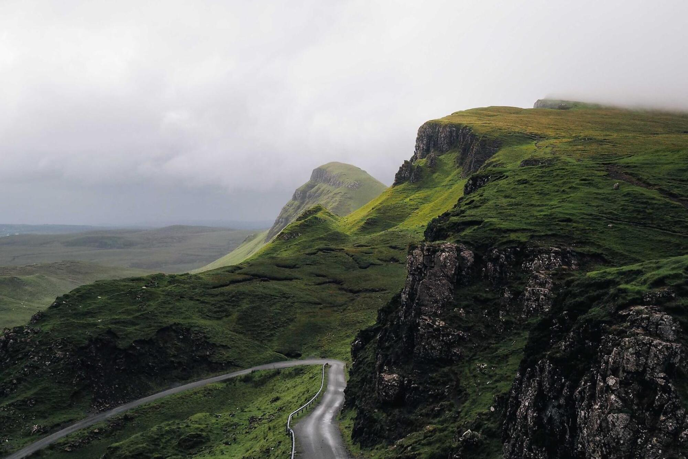
↓Gallery
按主题筛选，点击任意照片进入全屏浏览（支持 ← → 切换、Esc 关闭）。
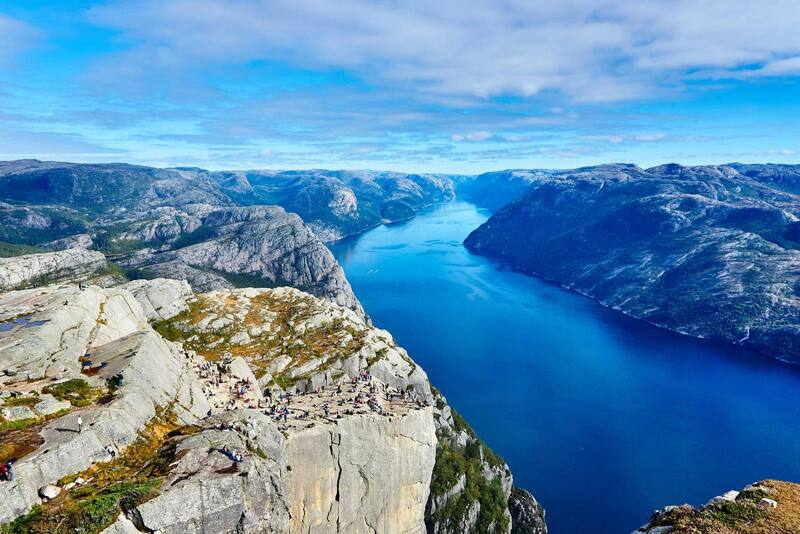
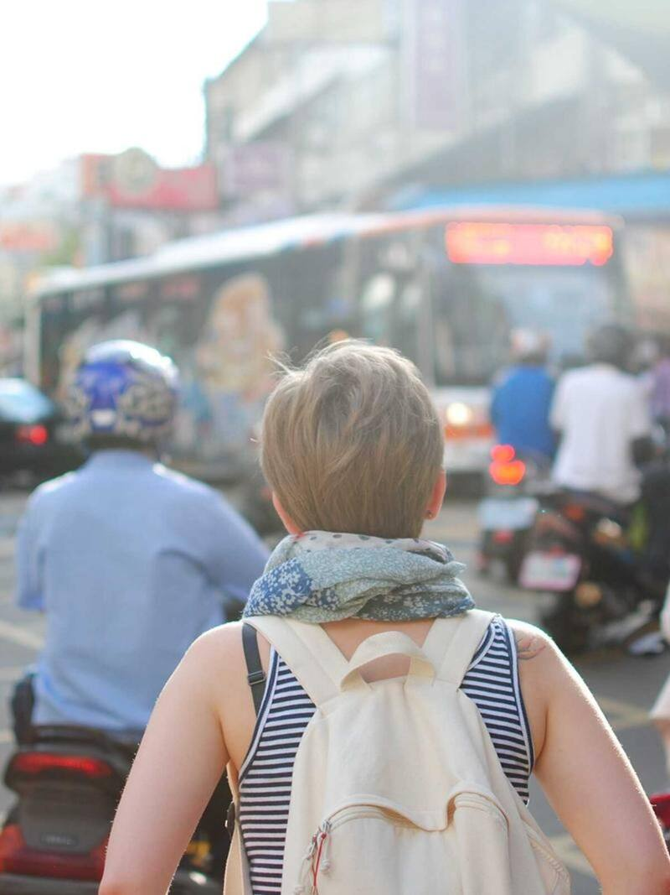
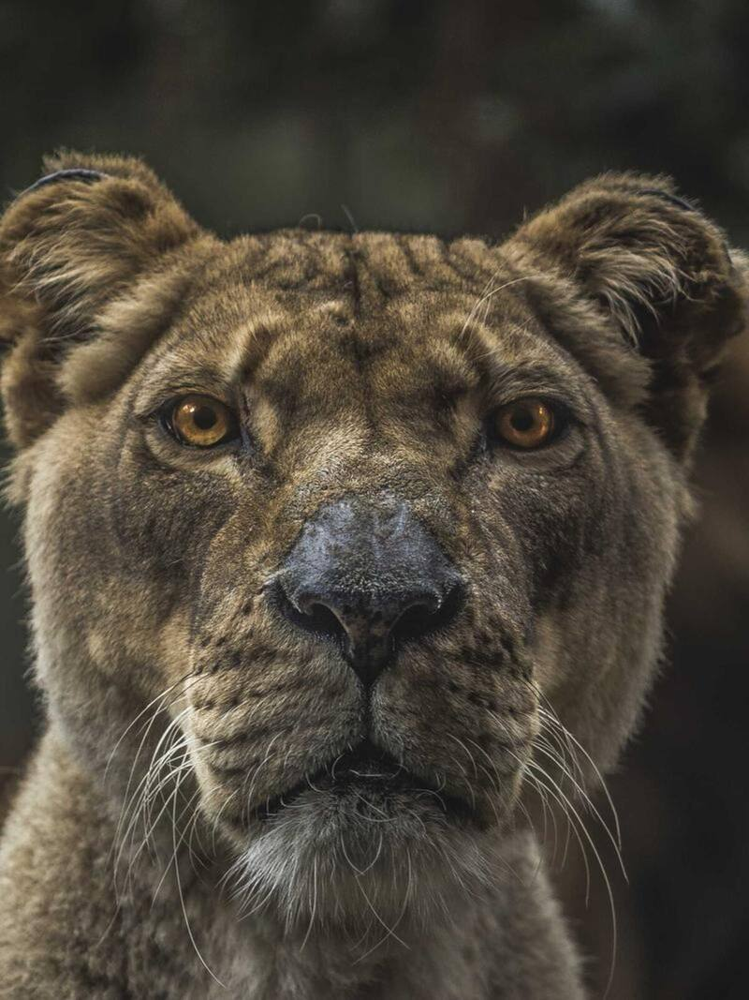
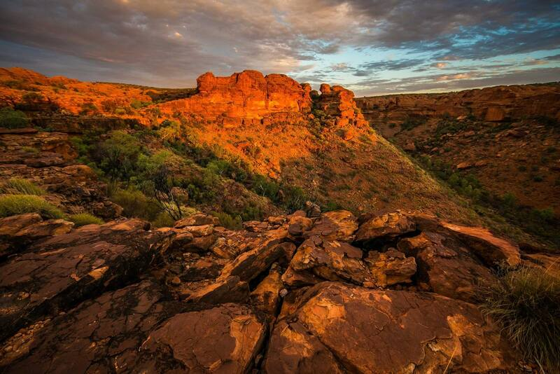
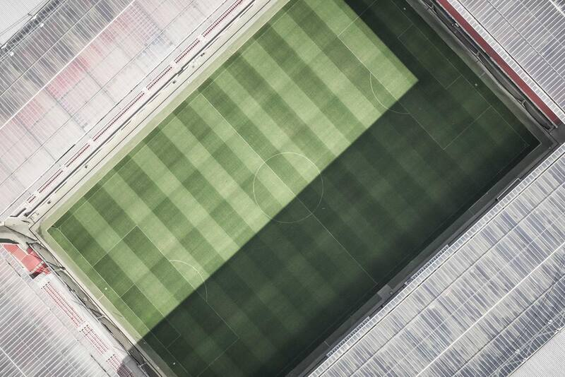
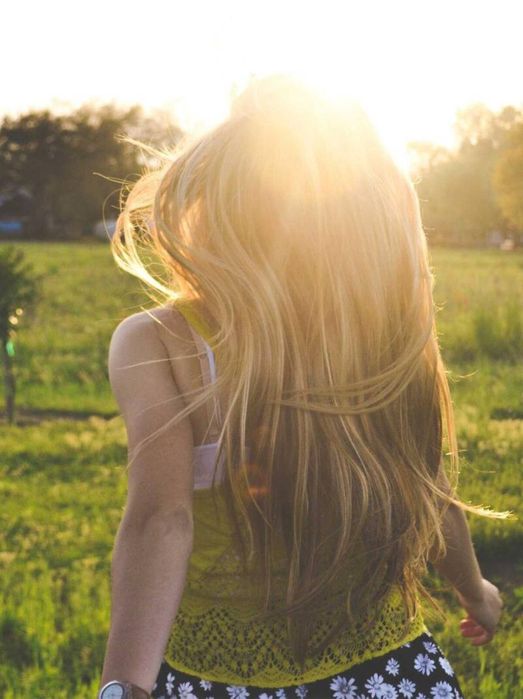
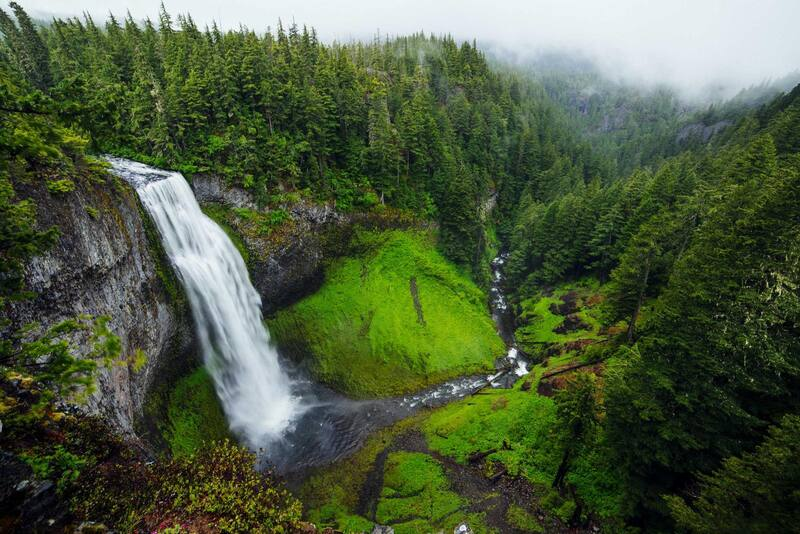
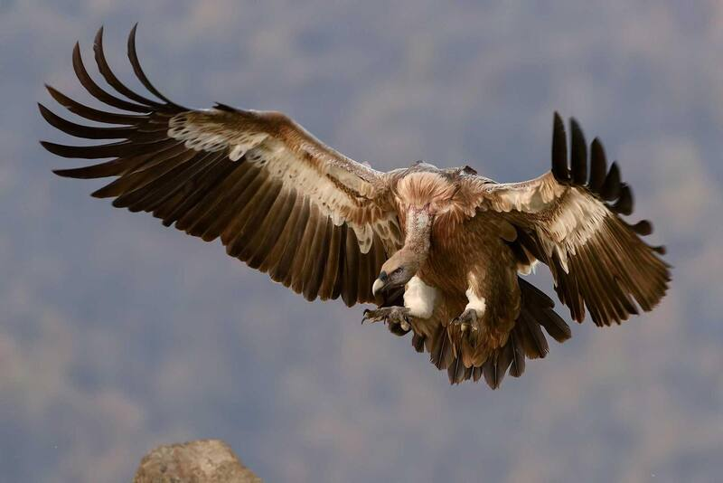
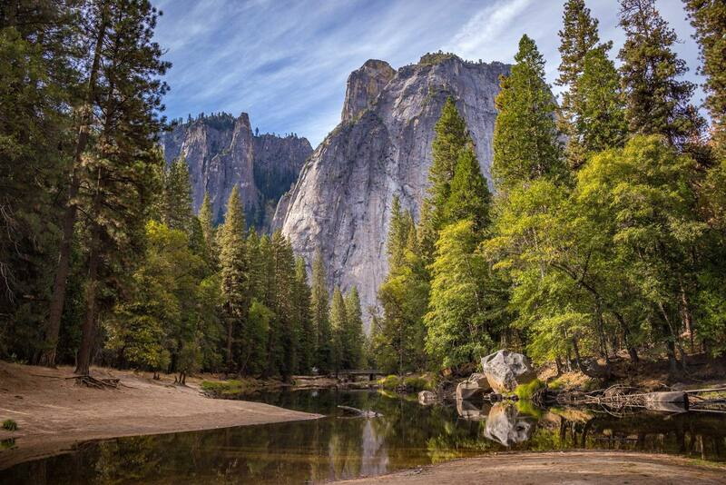
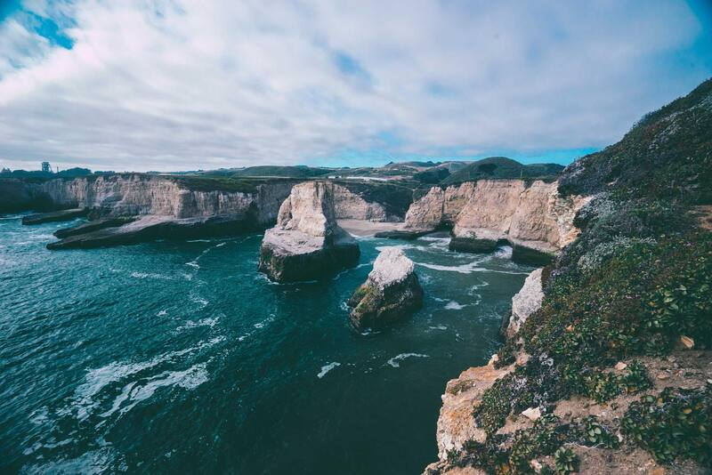
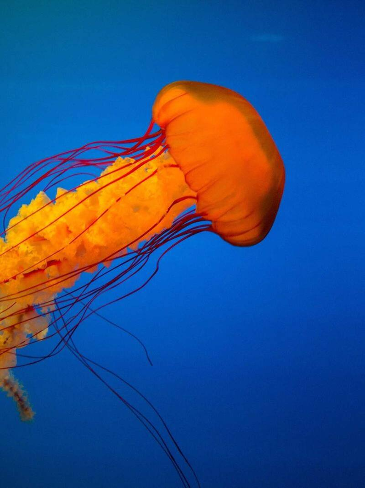
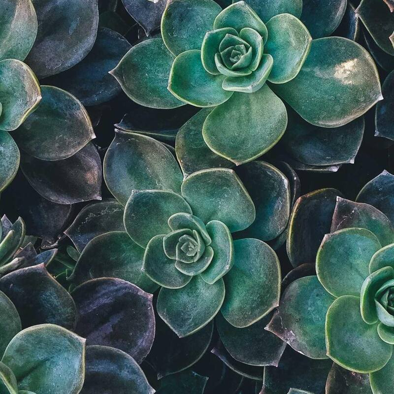
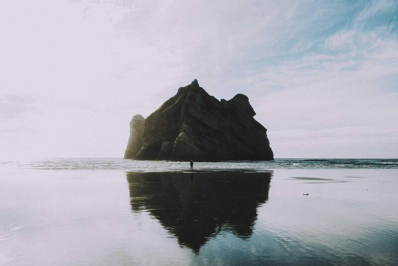
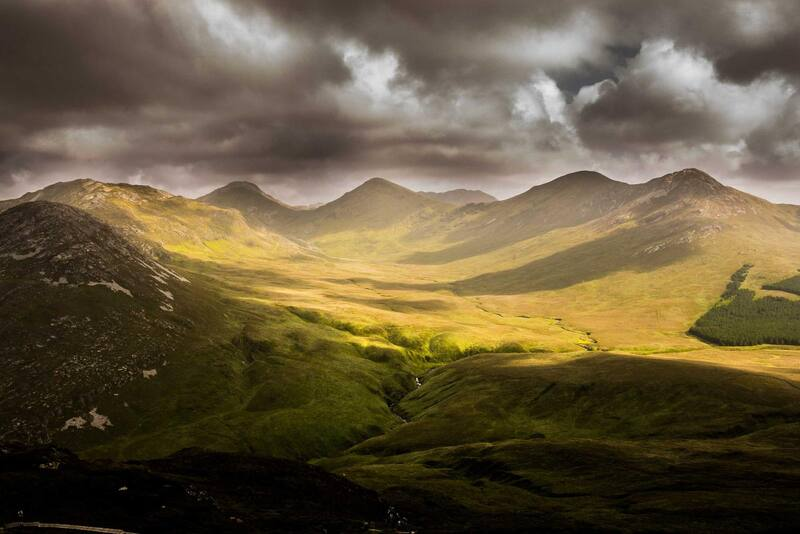
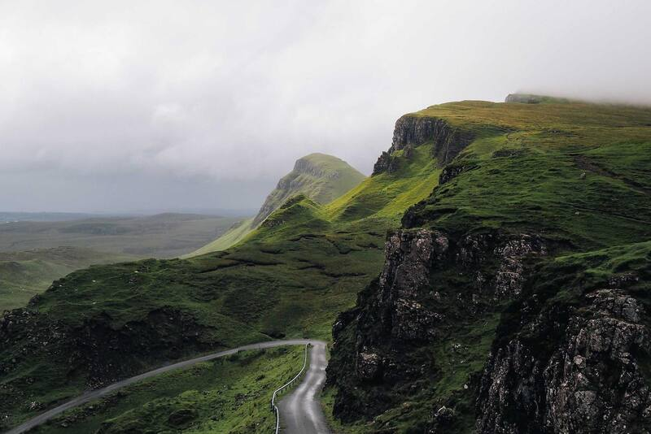
该分类下暂时还没有作品。
Series
用三个冬天记录北欧海岸线上的光与雪，2024 年将结集成册。
在通勤高峰的地铁与街角，寻找不被打扰的真实表情。
只用窗光与日落，拍摄不需要摆姿势的人像。
About
林叙，自由摄影师，现居杭州。擅长在自然光条件下完成风光与人像创作，作品曾入选国家地理旅行者摄影展， 并为多家旅行与生活方式品牌拍摄。
我相信好照片来自等待：等一场雾散、等一个人放下防备。拍摄时我尽量少干预，让画面保留原本的呼吸。
Contact
约拍、商业合作或作品授权，都欢迎来信，通常 24 小时内回复。